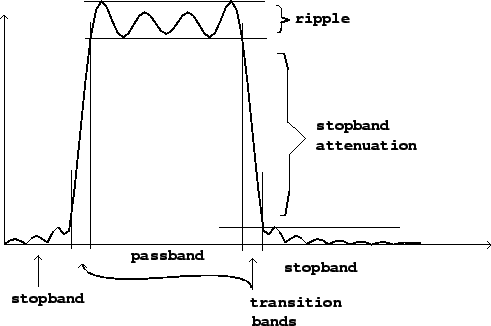

A band-pass filter admits frequencies within a given band, rejecting frequencies below it and above it. Figure 8.3 shows the frequency response of a band-pass filter, with the key parameters labelled. A stop-band filter does the reverse, rejecting frequencies within the band and letting through frequencies outside it.
|  |
In practice, a simpler language is often used for describing bandpass filters, as shown in Figure 8.4. Here there are only two parameters: a center frequency and a bandwidth. The passband is considered to be the region where the filter has at least half the power gain as at the peak (i.e., the gain is within 3 decibels of its maximum). The bandwidth is the width, in frequency units, of the passband. The center frequency is the point of maximum gain, which is approximately the midpoint of the passband.